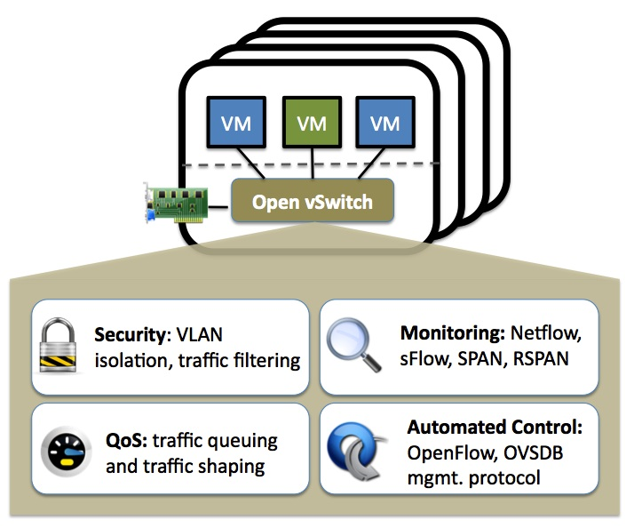

Open vSwitch
Why Open vSwitch？
Open vSwitch 的设计目标与以前的程序网络堆栈不同，它专注于 Linux 大规模虚拟化环境中对自动化和动态网络控制的需求。
在传统数据中心中，网络管理员通过对交换机的端口进行一定的配置，可以很好地控制物理机的网络接入，完成网络隔离、流量监控、数据包分析、Qos配置、流量优化等一系列工作。
但是在云环境中，仅凭物理交换机的支持，管理员无法区分被桥接的物理网卡上流淌的数据包属于哪个VM、哪个OS及哪个用户，Open vSwitch的引入则使云环境中虚拟网络的管理以及对网络状态和流量的监控变得容易。
What is Open vSwitch？

主要组成部分：
- ovs-vswitchd，一个守护进程，最重要的模块，实现了虚拟机交换机的后台。
- ovsdb-server，一个轻量级的数据库服务器，通过 ovs-vswitchd 查询来获取其配置。
- ovsdb-client，ovsdb-server的客户端命令行工具。
- ovs-vsctl，用于查询和更新 ovs-vswitchd 配置。
- ovs-dpctl，用于配置内核模块中的datapath。
- ovs-appctl，一个向正在运行的 Open vSwitch 守护进程发送命令的实用程序。 工具：
- ovs-ofctl，通过OpenFlow协议查询和控制OpenFlow交换机和控制器。
- ovs-pki，一个用于创建和管理 OpenFlow 交换机的公钥基础设施的实用程序。
- ovs-testcontroller，一个简单的 OpenFlow 控制器，可能对测试有用
- tcpdump 的补丁，使其能够解析 OpenFlow 消息。